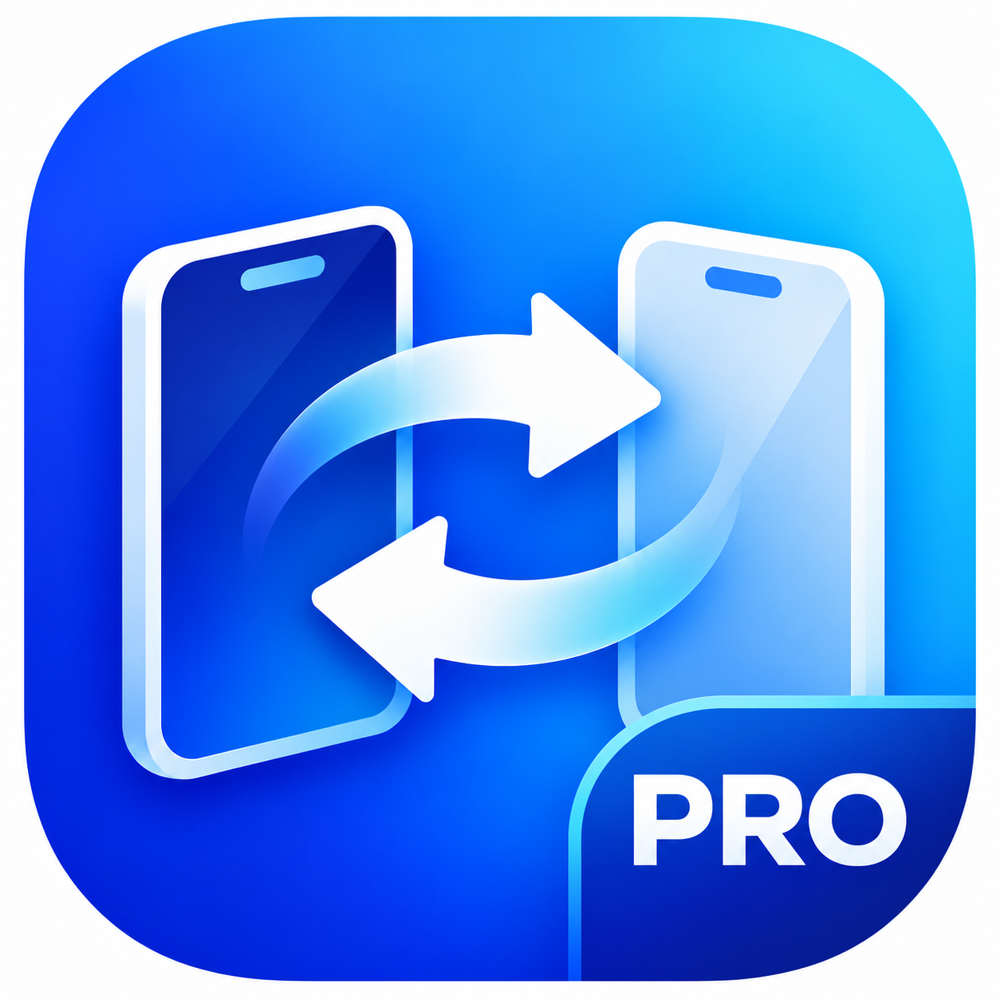
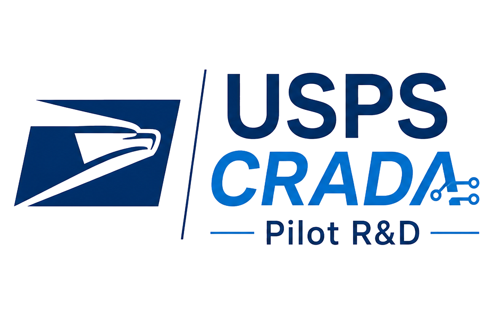
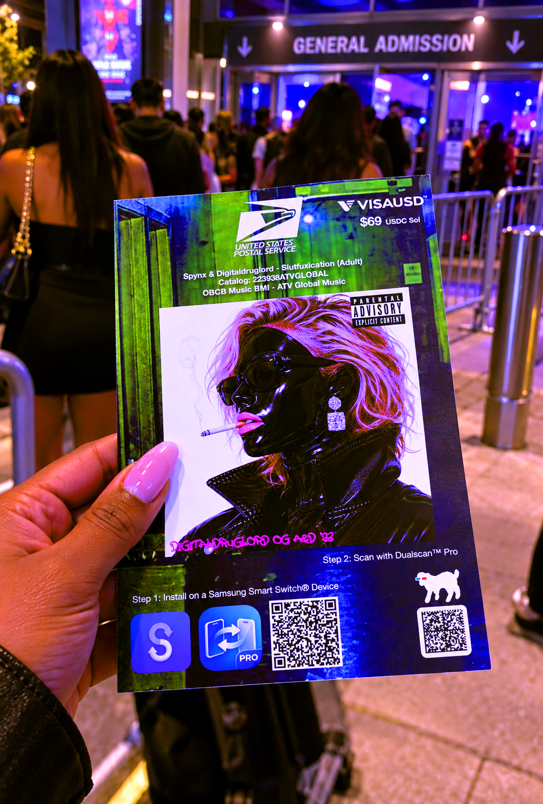
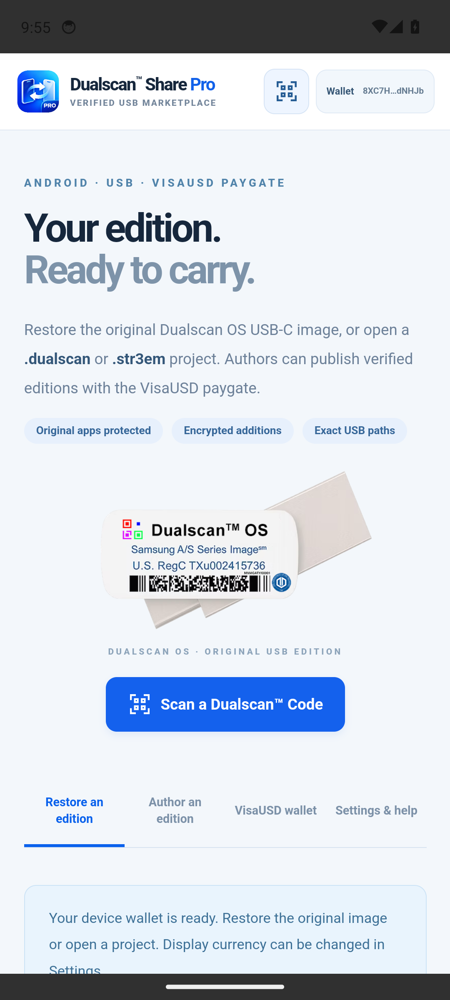
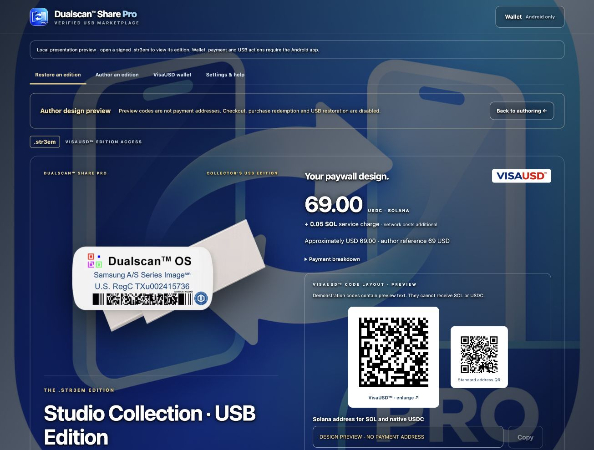
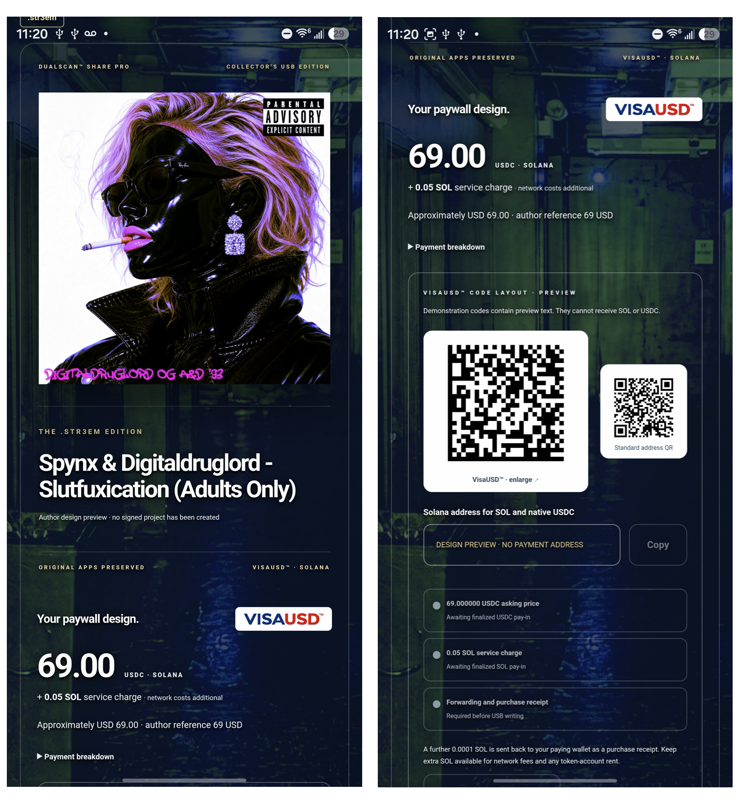

Make your USB image
Choose Original Dualscan OS, Open .dualscan or Open .str3em. Loading the original pins the complete official GitHub image, free, without needing a source USB.
Select and check a connected destination USB root before any writes.

Dualscan™ Share ProTHE ANDROID USB EDITION Share SuiteANDROID · SHARE PRO 1.0.4 · RELEASED
Make the original Dualscan OS USB-C image. Carry a free .dualscan project. Or create your own .str3em edition with a VisaUSD paygate.
Android 11 or later · compatible Android / Google TV
Connected USB storage and a supported system folder picker required.

THE WORKFLOW / 01
Share Pro opens in Restore with the official image selected. A verified source, a reviewed destination and complete file read-back guide every transfer.
Choose Original Dualscan OS, Open .dualscan or Open .str3em. Loading the original pins the complete official GitHub image, free, without needing a source USB.
Select and check a connected destination USB root before any writes.
Connect a USB containing the complete original stack and your separate added Smart Switch snapshots. Verify every original file, then publish a free project or a paid edition to your GitHub or S3.
Preview a paid edition's artwork, banner and price before signing or publishing.
Open the prepared project, review the USB destination and authorize missing files. Paid editions require verified payment or a previous-purchase receipt. All restored files are checked and read back.
Then use Samsung Smart Switch separately on a compatible Galaxy.
SCAN A DUALSCAN™ CODE / NEW IN 1.0.4
A printed QR or Data Matrix can point to a prepared project. In Share Pro, choose Scan a Dualscan™ Code beneath the USB artwork to open it.

USPS CRADA SERVICES UNIT
An example of what the USPS CRADA Services Unit can help design: a flyer that introduces an edition and connects its audience to the prepared USB-C project. The supplied flyer below is a design example; its printed price and artwork are not a live offer on this page.


Scan a QR or Data Matrix containing a Typelocker TCU1 locator or a plain HTTPS direct .dualscan / .str3em project-file endpoint. The code points to the descriptor; it does not contain the whole USB image.
The app validates the downloaded descriptor. A free project prepares its restore plan; a signed .str3em opens its VisaUSD paywall and previous-purchase options. Original-image and USB checks remain required before checkout or writes. Scanning does not prove payment.
Connect and check the destination USB root before paid checkout or writes. Authorize the missing files, complete any required payment, then restore with full read-back. Use Samsung Smart Switch separately on a compatible Galaxy.
Camera permission is requested when you open Scan. Autofocus and tap focus use the camera's available capabilities. You can paste a project link or TCU1 code instead, including on a TV without a usable camera. Project, paywall and original-file protections still apply.
INSIDE SHARE PRO / 02
Embed your project image, background and name banner in a signed .str3em file. The opened edition leads with its artwork and VisaUSD paygate.


CHOOSE YOUR PROJECT / 03
Project files carry the pinned manifest. Their binary payloads stay in Git/LFS or S3 until restored to USB.
Restore the official original image or a verified free derivative. No USDC purchase or SOL service charge applies.
Encrypt commercial additions before cloud upload and set a fixed USDC asking price with a home-currency reference. Recipients see the signed edition and can redeem an existing purchase.
The author receives 90% of the USDC asking price; 10% goes to the platform. An additional 0.05 SOL service charge applies, plus 0.0001 SOL returned to the paying wallet as a receipt. Network fees and token-account rent are additional.
THE ORIGINAL STAYS INTACT / 04
Every official original file, app and launcher configuration must remain unchanged. Your additions belong in separate valid Smart Switch snapshots.
Restoration puts SmartSwitchBackup2, the OEM folder and other original files directly at the USB root. Original snapshots are logically first. Different existing destination files block writes.
SmartSwitchBackup2/
original-device/
original-snapshot/ UNCHANGED
your-device/
added-snapshot/ SEPARATE
original OEM folder/
all other original filesNo repository folder or ZIP wrapper.
No drive formatting or automatic replacement of different files.
ANDROID DOWNLOAD / 05
Version 1.0.4 for Android 11 or later. Compatible Android / Google TV devices must provide supported USB storage access and a system folder picker.
e97edfb702f473a56730e588cc779ec437249987448df398a77c0954e5a7c140Compare the complete checksum with your downloaded file before installation. Download SHA256SUMS.txt ↗
Install the new APK over your existing Share Pro app. Keep its data; do not uninstall or clear storage. The local wallet belongs to that installation and has no displayed recovery phrase.
Android must accept the matching application ID and signing certificate. If the update is rejected, contact support instead of uninstalling to force it.
Platform Tools are released As-Is and Project Manager testing should be done before any and all commercial releases.
BEFORE YOU BEGIN
Keep the app open and USB connected. Drive speed, small-file overhead, network access and full verification affect transfer time. Confirm free space and test your intended device and snapshot before distribution.
GitHub and public S3 require your own configured access. Commercial additions are encrypted in the cloud; access is enforced by the app and is not DRM against reverse engineering. Restored plaintext can be copied.
A verified file copy does not certify a Samsung Smart Switch phone restoration. Share Pro does not install APKs or play .diamond media; use Diamond Player separately.